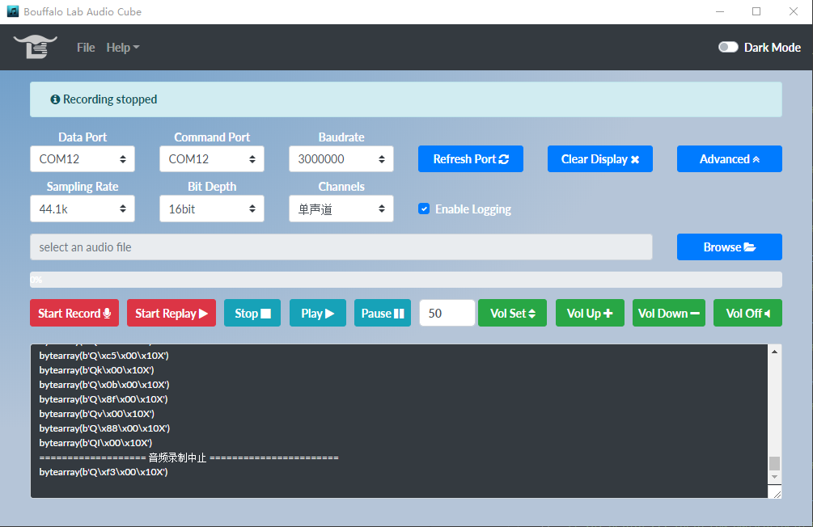

8.3. I2S - 使用DMIC配合audio cube实现在线录音¶
本 demo 演示 I2S 外设 驱动板载 DMIC 的音频电路板,通过Audio Cube在线播放的功能。
8.3.1. 准备工具¶
- 一块 bl702 开发板 +DMIC音频子板 + PC端 Audio_Cube 工具
8.3.2. 硬件连接¶
本 demo 基于 BL706_AVB 开发板，需要用到 DMIC 音频子板，连接方式如下：
| GPIO function | GPIO pin |
|---|---|
| CLK_OUT(MCLK) | GPIO6 |
| I2S_BCLK | GPIO4 |
| I2S_FS | GPIO29 |
| I2S_DI | GPIO3 |
| UART0_TX | GPIO15 |
| UART0_RX | GPIO14 |
本 demo 用到的内部外设资源如下：
| peripheral | role |
|---|---|
| I2S | 标准音频数据接口，用于接受DMIC音频子板传送来的音频数据 |
| UART | 串口,用于与上位机 Audio_cube 软件通讯 |
| DMA-CH2/CH3 | 直接存储访问技术，用于配合 I2S 高效发送音频数据，减少对 CPU 的负载 |
| CLK_OUT | 引脚复用对外输出指定时钟信号，用作提供MCLK时钟 |
8.3.3. 软件实现¶
- 软件代码见
examples/audio_cube文件夹, 其中data_protocol.c数据协议控制,用以与 Audio_Cube 工具交互通讯,获取控制信息、传输音频数据, data_protocol.c是音频驱动相关程序,配置相关外设与音频数据解析, 播放与录制音频。main.c 使用以上程序,完成本 demo 的功能实现。
本文档不再详细功能实现的细节,仅概述功能过程,可以参考 I2S 与 UART 相关文档。
配置 I2S, I2C, CLK_OUT(MCLK) 相关复用引脚，见 bsp/board/bl706_avb/pinmux_config.h 中的宏定义选项:
1 2 3 4 5 6 7 8 9 | #define CONFIG_GPIO6_FUNC GPIO_FUN_CLK_OUT
#define CONFIG_GPIO3_FUNC GPIO_FUN_I2S
#define CONFIG_GPIO4_FUNC GPIO_FUN_I2S
#define CONFIG_GPIO29_FUNC GPIO_FUN_I2S
#define CONFIG_GPIO30_FUNC GPIO_FUN_I2S
#define CONFIG_GPIO11_FUNC GPIO_FUN_I2C
#define CONFIG_GPIO16_FUNC GPIO_FUN_I2C
#define CONFIG_GPIO14_FUNC GPIO_FUN_UART0_TX
#define CONFIG_GPIO15_FUNC GPIO_FUN_UART0_RX
|
8.3.4. 编译和烧录¶
- CDK 编译
打开项目中提供的工程文件：audio_cube.cdkproj
参照 Windows 下使用 CDK (类 MDK Keil)开发指南 的步骤编译下载即可
- 命令行编译
1 2 | $ cd <sdk_path>/bl_mcu_sdk
$ make BOARD=bl706_avb APP=audio_cube
|
- 烧录
- 详见 BLDevCube 烧录工具指南
8.3.5. Audio Cube 上位机的使用¶
正确编译烧录程序后,复位启动,通过串口连接 PC,打开 Audio Cube 软件,界面如图:

选择对应的串口号(Data Port 与 command Port 相同),设置与已烧录的程序里相同的波特率(默认为3M,在 data_protocol.c 中修改),
Refresh Port 按键用于刷新串口信息,Clear Display 用于清除显示的信息,Advanced 按键展开关于录音的设置,包括采样率、声道数、采样位宽(固定为16bit)
8.3.5.1. 录制音频¶
录制音频前若正在播放音乐，需要点击 Stop 停止播放。点击 Start Record 录制音频,再次点击停止录制,会将录制的音频保存在 record 文件夹下， 录制的音频会以时间作为文件名。如果需要播放录制的音频,点击 Browse 选择录制的音频，再点击 Play 即可。
8.3.6. 实验现象¶
见视频展示：